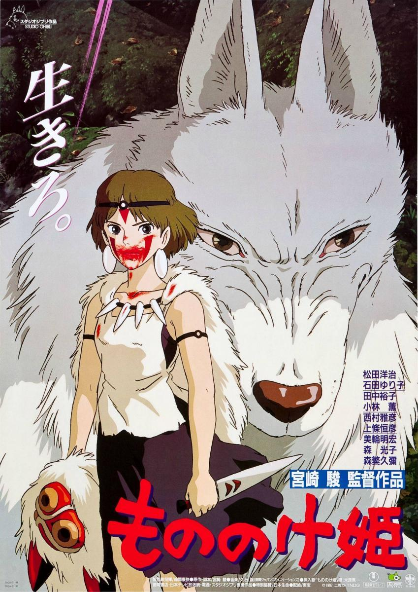

HAYAO MIYAZAKI
Hayao Miyazaki es un reconocido director japonés de películas anime, creador del Studio Ghibli, nacido el 5 de enero de 1941. Su cine se vio influenciado por sus padres. Su padre, Katsuji Miyazaki, dirigía un negocio que fabricaba timones para un avión de guerra, por lo que desde muy pequeño Miyazaki desarrolló una gran fascinación tanto por la aviación como por la literatura bélica, elementos que vemos en sus filmes. Su madre una mujer fuerte por la cual sentía una gran admiración, quien falleció en 1955 a causa de una tuberculosis espinal, tal vez, es por ella que siente un gran apego por los personajes femeninos con gran fortaleza que vemos en su cine.
Hayao estudio Ciencias políticas y económicas al igual que su padre, en la Universidad Gakushuin. Sin embargo, durante la década de los 60, Miyazaki entro a trabajar como intercalador (encargado de dibujos entre movimientos) en Toei Doga, en cual iniciaría su carrera en el ámbito del anime japonés allí conoce a la mujer con quien se casaría en 1965, la dibujante Akemi Ota, con quien tuvo a sus hijos Goro y Keisuke. También durante su tiempo en Toei Doga entablaría relación con Isao Takahata, con quien asociación en proyectos futuros.
En 1978, con una mayor experiencia emigra a Nippon Animation, en donde participo en serie como “Heidi, Marco” y asumió la dirección de “Conan, el chico del futuro”. Luego de un año bajo otra empresa dirige su primer film animado “Lupin III: El castillo de Cagliostro” y también algunos episodios de la serie “Sherlock Holmes”. Luego de de realizar “Lupin III: El castillo de Cagliostro”, inicia un proceso de lluvia de ideas para futuros proyectos personales, así en 1982 recibe el encargo por parte de la revista Animage crear un manga con libertad total, el cual se llamo “Kaze no Tani no Naushika” (Nausicaä del valle del viento) y que posteriormente en 1984 adaptaría al cine siendo esta su primera “película de autor”, bajo la producción en asociación entre Tokuma Shoten y Topacraft Studio. Estudio fundado por Miyazaki y Takahata, el cual en 1985 cambia su nombre a Studio Ghibli, haciendo de “Nausicaä del valle del viento “el primer film de la casa realizadora.
Y así nace el cine de Miyazaki, uno que da un mensaje ecologista, en contra de un avance industrial sin responsabilidad, que puede traer la destrucción de la naturaleza, también lleno de protagonistas infantiles que buscar ese amor puro. Pero no fue hasta 1997 cuando Miyazaki llega a nivel mundial gracias al estreno de “La princesa Mononoke”, película animada escrita y dirigida por Hayao, que contó con excelente recibimiento crítico en los Estados Unidos, hecho que propulsó su lanzamiento definitivo internacional.
En el 2001 creó la película animada “El viaje de Chihiro”, filme que le otorgo un Oso de Oro de la Berlinale 2002 y el Oscar
a la mejor película animada en el 2002. Con dichos premios el cine de Miyazaki logro posicionarse más aun en el gusto de las personas de occidente,
siendo reconocido a nivel mundial como un maestro del cine animado y posicionando a Studio Ghibli, como uno de los más importantes de Japón. El 1 de
septiembre de 2013, anunció, a través de un comunicado del presidente de la compañía, Kōji Koshino, que su película El viento se levanta sería su
último largometraje, y que se retiraría como director de proyectos de animación de Ghibli. El 25 de febrero de 2017, Studio Ghibli confirmó
oficialmente el regreso de Miyazaki con ¿Cómo vives?, y cuyo estreno en Japón se espera entre 2020 y 2021. El 10 de agosto de 2017,
el estudio reabrió sus puertas.
Fuente: Wikipedia
ElBofe